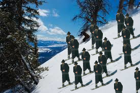
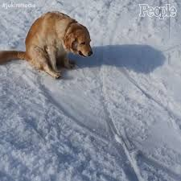
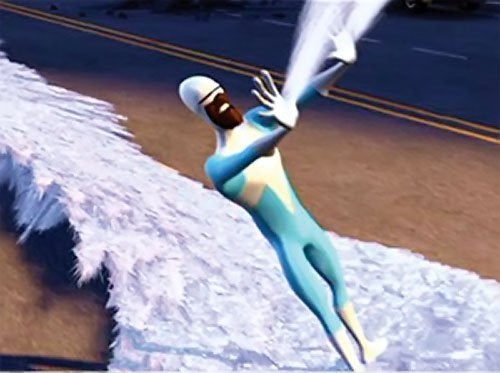

Slēpošana
Slēpošana ir amizants sporta veids ar ekstremalitātēm. Šis sports tiek cildināts visāpkārt zemeslodei. Slēpošana balstās ļoti uz fiziku un it īpaši uz gravitāciju. Gravitācijas paātrinājums ir 9,8 m/s*s. Šo sportu mīl gan veci, gan jauni. Ja vēlaties ar šo sportu nodarboties, tad jums nav jābrauc tālu, jo šo var pat darīt Latvijā. Slēpošanā arī populāra gurķa tehnika. Tik pat laba, bet ne tik laba ir arī burkāna tehnika.
Lai uzzinātu vēlŠļūkšana uz dibena
Ar šo sportu var nodarboties visā ziemas garumā. Nav pat tik daudz sniegs vajadzīgs, vien nedaudz drosmes un siltumam ap sirdi.
Lai uzzinātu vēlStauja koncentrētu sniega porciju pārvietošana citu cilvēku virzienā
Jūs jau zināt to laiku, kad kāds ir pieriebies un ļoti gribat viņam/viņai iemest ar ātri lidojošu, paraboliskas trajektorijas krītošu, koncentrētu sniega piku.
Lai uzzinātu vēl